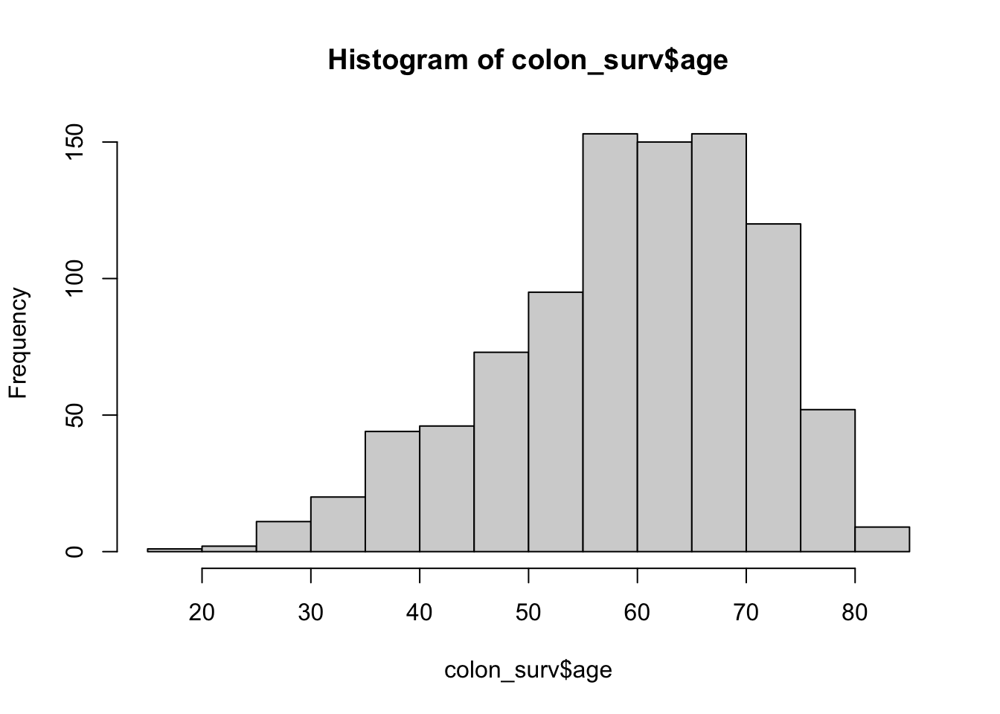

Code
# Load library
library(dplyr)
library(survival)
library(janitor)
library(magrittr)These are data from one of the first successful trials of adjuvant chemotherapy for colon cancer. Levamisole is a low-toxicity compound previously used to treat worm infestations in animals; 5-FU is a moderately toxic (as these things go) chemotherapy agent. There are two records per person, one for recurrence and one for death.
The purpose of this project is to compare survival between the untreated (Obs) group vs those treated with amisole (Lev), or amisole + 5-FU.
Column names:
| id: | id |
| study: | 1 for all patients |
| rx: | Treatment - Obs(ervation), Lev(amisole), Lev(amisole)+5-FU |
| sex: | 1=male |
| age: | in years |
| obstruct: | obstruction of colon by tumour |
| perfor: | perforation of colon |
| adhere: | adherence to nearby organs |
| nodes: | number of lymph nodes with detectable cancer |
| time: | days until event or censoring |
| status: | censoring status |
| differ: | differentiation of tumour (1=well, 2=moderate, 3=poor) |
| extent: | Extent of local spread (1=submucosa, 2=muscle, 3=serosa, 4=contiguous structures) |
| surg: | time from surgery to registration (0=short, 1=long) |
| node4: | more than 4 positive lymph nodes |
| etype: | event type: 1=recurrence,2=death |
# Load library
library(dplyr)
library(survival)
library(janitor)
library(magrittr)#Load data
colon <- as_tibble(colon)
head(colon)# A tibble: 6 × 16
id study rx sex age obstruct perfor adhere nodes status differ
<dbl> <dbl> <fct> <dbl> <dbl> <dbl> <dbl> <dbl> <dbl> <dbl> <dbl>
1 1 1 Lev+5FU 1 43 0 0 0 5 1 2
2 1 1 Lev+5FU 1 43 0 0 0 5 1 2
3 2 1 Lev+5FU 1 63 0 0 0 1 0 2
4 2 1 Lev+5FU 1 63 0 0 0 1 0 2
5 3 1 Obs 0 71 0 0 1 7 1 2
6 3 1 Obs 0 71 0 0 1 7 1 2
# ℹ 5 more variables: extent <dbl>, surg <dbl>, node4 <dbl>, time <dbl>,
# etype <dbl>Since the current analysis is focused on survival, create a new variable for recurrence time. This will create a data table with one row per individual.
colon_surv <- colon%>%filter(etype == 2)
# Identify participants with outome = death (not censored)
colon_surv$death <- if_else(colon_surv$status == 1, 0, 1) Identify participants who had recurrence. Identify those not censorred for recurrence event. Filter event type = 1 (recurrence), status = 0 (not censored).
recurrence <- colon%>%filter(etype == 1 & status == 0)%>%select(id)
recurrence <- recurrence%>%mutate(recurrence = 1) # list of patients with recurrence
colon_surv <- colon_surv%>%merge(recurrence, by = "id", all.x = TRUE)
colon_surv$recurrence[is.na(colon_surv$recurrence)] <- 0Check missing values
na_counts <- sapply(colon_surv, function(x)sum(is.na(x)))
na_counts id study rx sex age obstruct perfor
0 0 0 0 0 0 0
adhere nodes status differ extent surg node4
0 18 0 23 0 0 0
time etype death recurrence
0 0 0 0 # replace NAs with mode
table(colon_surv$differ)
1 2 3
93 663 150 mode(colon_surv$differ)[1] "numeric"median(colon_surv$nodes, na.rm= TRUE)[1] 2colon_surv$differ <- if_else(is.na(colon_surv$differ), 2,colon_surv$differ)
colon_surv$nodes <- if_else(is.na(colon_surv$nodes), 2,colon_surv$nodes)Insight: only nodes and differ columns have NA values. Replacing the 23 NAs in differ column with mode, and replace NAs in nodes with median.
Evaluate continuous variables
# age
hist(colon_surv$age)
hist(colon_surv$nodes)hist(colon_surv$time)
Insight: Age is normally distribute. Number of nodes is skewed to the right. Time is fairly normally distributed with most the individuals had event time between 500-3000 days.
Evaluate nodes column to investigate outliers
t <- colon_surv%>%filter(node4 ==1) # samples with more than positive lymph nodes
hist(t$nodes) Insight: samples with greater than 4 lymph nodes have less than 5 count in nodes column, so the two columns are not consistent. Therefore, nodes column will not be used for further analysis.
Evaluate categorical variables
summary_table <- colon_surv%>%summarise(count =n(),
male = sum(sex),
median_age = median(age),
ct_perforation = sum(perfor),
ct_adherence_nerby_organ = sum(adhere),
ct_death = sum(death))
summary_table count male median_age ct_perforation ct_adherence_nerby_organ ct_death
1 929 484 61 27 135 477Insight: Total number of participants: 929. About half of the participants are male and about half were censored, while the other half died.
colon_surv <- colon_surv%>%mutate(differentiation = case_when(differ == 1 ~ "well",
differ == 2 ~ "moderate",
differ == 3 ~ "poor"),
local_spread = case_when(extent == 1 ~ "submucosa",
extent == 2 ~ "muscle",
extent == 3 ~ "serosa",
extent == 4 ~ "contiguous"),
surg_to_reg_time = case_when(surg == 0~ "short",
surg == 1 ~ "long"))Frequency tables for categorical variables
# frequency tables for categorical variables
# Tumor differentiation
colon_surv %>%
tabyl(differentiation, rx) %>%
adorn_percentages("col") %>%
adorn_pct_formatting(digits = 1) %>%
adorn_ns() differentiation Obs Lev Lev+5FU
moderate 74.9% (236) 73.9% (229) 72.7% (221)
poor 16.5% (52) 14.2% (44) 17.8% (54)
well 8.6% (27) 11.9% (37) 9.5% (29)# extent of local spread
colon_surv %>%
tabyl(local_spread, rx) %>%
adorn_percentages("col") %>%
adorn_pct_formatting(digits = 1) %>%
adorn_ns() local_spread Obs Lev Lev+5FU
contiguous 6.3% (20) 3.9% (12) 3.6% (11)
muscle 12.1% (38) 11.6% (36) 10.5% (32)
serosa 79.0% (249) 83.5% (259) 82.6% (251)
submucosa 2.5% (8) 1.0% (3) 3.3% (10)# colum obstruction
colon_surv %>%
tabyl(obstruct, rx) %>%
adorn_percentages("col") %>%
adorn_pct_formatting(digits = 1) %>%
adorn_ns() obstruct Obs Lev Lev+5FU
0 80.0% (252) 79.7% (247) 82.2% (250)
1 20.0% (63) 20.3% (63) 17.8% (54)# colon perforation
colon_surv %>%
tabyl(perfor, rx) %>%
adorn_percentages("col") %>%
adorn_pct_formatting(digits = 1) %>%
adorn_ns() perfor Obs Lev Lev+5FU
0 97.1% (306) 96.8% (300) 97.4% (296)
1 2.9% (9) 3.2% (10) 2.6% (8)# Adherance to nearby organs
colon_surv %>%
tabyl(adhere, rx) %>%
adorn_percentages("col") %>%
adorn_pct_formatting(digits = 1) %>%
adorn_ns() adhere Obs Lev Lev+5FU
0 85.1% (268) 84.2% (261) 87.2% (265)
1 14.9% (47) 15.8% (49) 12.8% (39)# extent of local tumor spread
colon_surv %>%
tabyl(local_spread, rx) %>%
adorn_percentages("col") %>%
adorn_pct_formatting(digits = 1) %>%
adorn_ns() local_spread Obs Lev Lev+5FU
contiguous 6.3% (20) 3.9% (12) 3.6% (11)
muscle 12.1% (38) 11.6% (36) 10.5% (32)
serosa 79.0% (249) 83.5% (259) 82.6% (251)
submucosa 2.5% (8) 1.0% (3) 3.3% (10)# More than 4 lymph nodes with cancer
colon_surv %>%
tabyl(node4, rx) %>%
adorn_percentages("col") %>%
adorn_pct_formatting(digits = 1) %>%
adorn_ns() node4 Obs Lev Lev+5FU
0 72.4% (228) 71.3% (221) 74.0% (225)
1 27.6% (87) 28.7% (89) 26.0% (79)# Recurrence
colon_surv %>%
tabyl(recurrence, rx) %>%
adorn_percentages("col") %>%
adorn_pct_formatting(digits = 1) %>%
adorn_ns() recurrence Obs Lev Lev+5FU
0 56.2% (177) 55.5% (172) 39.1% (119)
1 43.8% (138) 44.5% (138) 60.9% (185)# time from surgery to registration
colon_surv %>%
tabyl(surg, rx) %>%
adorn_percentages("col") %>%
adorn_pct_formatting(digits = 1) %>%
adorn_ns() surg Obs Lev Lev+5FU
0 71.1% (224) 74.2% (230) 75.0% (228)
1 28.9% (91) 25.8% (80) 25.0% (76)
Summary statistics grouped by treatment
summary_table <- colon_surv%>%group_by(rx)%>%summarise(count =n(),
male = sum(sex),
median_age = median(age),
ct_perforation = sum(perfor),
ct_adherence_nerby_organ = sum(adhere),
ct_death = sum(death),
perc_male = (male/count)*100,
iqr_age = IQR(age))
summary_table# A tibble: 3 × 9
rx count male median_age ct_perforation ct_adherence_nerby_or…¹ ct_death
<fct> <int> <dbl> <dbl> <dbl> <dbl> <dbl>
1 Obs 315 166 60 9 47 147
2 Lev 310 177 61 10 49 149
3 Lev+5FU 304 141 62 8 39 181
# ℹ abbreviated name: ¹ct_adherence_nerby_organ
# ℹ 2 more variables: perc_male <dbl>, iqr_age <dbl>g <- colon_surv%>%filter(rx == "Lev+5FU")
summary(g$age) Min. 1st Qu. Median Mean 3rd Qu. Max.
26.0 52.0 62.0 59.7 70.0 81.0 Insight: Each treatment group had about 300 participants. Median age, number of participants with perforation and adherence are similar between the three groups. Whereas the total number of death are higher in the Lev+5FU group.
| Observation (%) | Amisole (%) | Amisole + 5-FU (%) | ||
|---|---|---|---|---|
| N=315 | N=310 | N=304 | ||
| Demographics | ||||
| Male | 166 (52.3) | 177 (57.1) | 141 | |
| Median age (years) [IQR] | 60 [53,68] | 61 [53,69] | 61 [52,70] | |
| Cancer characterstics | ||||
| Colon obstruction | 63 (20.0) | 63 (20.3) | 54 (17.8) | |
| Colon perforation | 9 (2.9) | 10 (3.2) | 8 (2.6) | |
| Adherence to nearby organs | 47 (14.9) | 49 (15.8) | 39 (12.8) | |
| Differentiation of tumor | ||||
| Well | 27 (8.6) | 37 (11.9) | 29 (9.5) | |
| Moderate | 236 (74.9) | 229 (73.9) | 221 (72.7) | |
| Poor | 52 (16.5) | 44 (14.2) | 54 (17.8) | |
| Extent of local spread | ||||
| Contiguous | 20 (6.3) | 12 (3.9) | 11 (3.6) | |
| Muscle | 38 (12.1) | 36 (11.6) | 32 (10.5) | |
| Serosa | 249 (79.0) | 259 (83.5) | 251 (82.6) | |
| Submucosa | 8 (2.5) | 3 (1.0) | 10 (3.3) | |
| More than 4 lymh nodes with cancer | Yes | 87 (27.6) | 89 (28.7) | 79 (26.0) |
| Recurrence (%) | Yes | 138 (43.8) | 138 (44.5) | 185 (60.9) |
| Short time from surgery to registration (%) | Yes | 91 (28.9) | 80 (25.8) | 76 (25.0) |